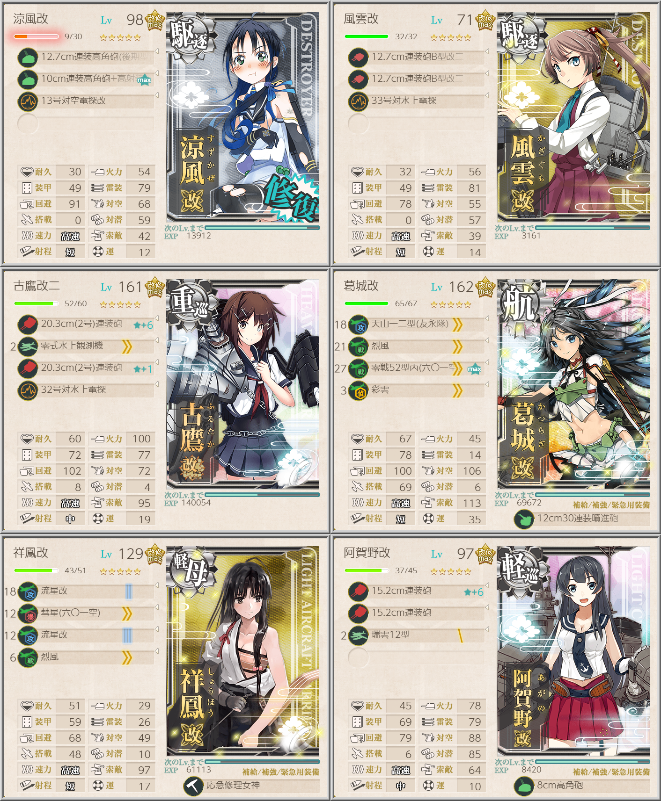

【艦これ】【第二期】3-3 アルフォンシーノ方面進出
3-3 攻略メモ
任務
敵北方艦隊主力を撃滅せよ！（ウィークリー）
3-3, 3-4, 3-5ボスに合計5回勝利
3-3ルート固定が可能になったおかげでだいぶやりやすくなったウィークリー
ネジx3がもらえるので、しっかりこなしておきたい
正規空母1軽空母1駆逐2で特定艦種を避ければACGMルート固定
Cが渦潮なので電探を
任務自体に編成縛りはないが、後述する他の任務と同時に進められるのでまとめてやってしまうとオトク
北方海域警備を実施せよ！（クォータリー）

軽巡1以上を含んで3-1, 3-2, 3-3ボスにそれぞれA勝利1回ずつの任務
制空は余裕で確保ラインを超えているので、調整して攻撃機を増やせるかもしれない
冬季北方海域作戦
軽巡級（軽巡/雷巡/練巡いずれか）を旗艦にして3-1, 3-3, 3-4, 3-5ボスにそれぞれS勝利2回
クォータリーの編成で旗艦を軽巡にするだけでも達成可能
雷巡にしたほうが安定感は増すが、さして難しい海域ではないのでお好みで